Tüm Yarımada
Orman, deniz ve yerleşkenin tek karede buluştuğu genel görünüm.
Videosunu Ana Sayfada İzleyin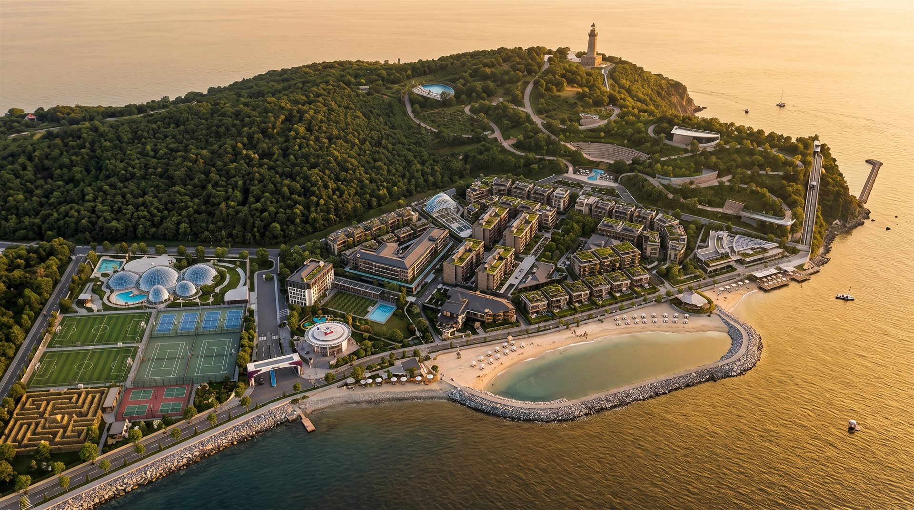
Üç tarafı Marmara ile çevrili 72.000 m²'lik yarımada; plajdan fünikülere, villalardan termal havuzlara bölge bölge önünüzde.
Plan üzerindeki noktalara dokunun; her bölgenin ne sunduğunu görselleriyle birlikte görün. Kuzeyde orman, plaj ve fener; merkezde konutlar ve otel; güneybatıda park ile spor vadisi.
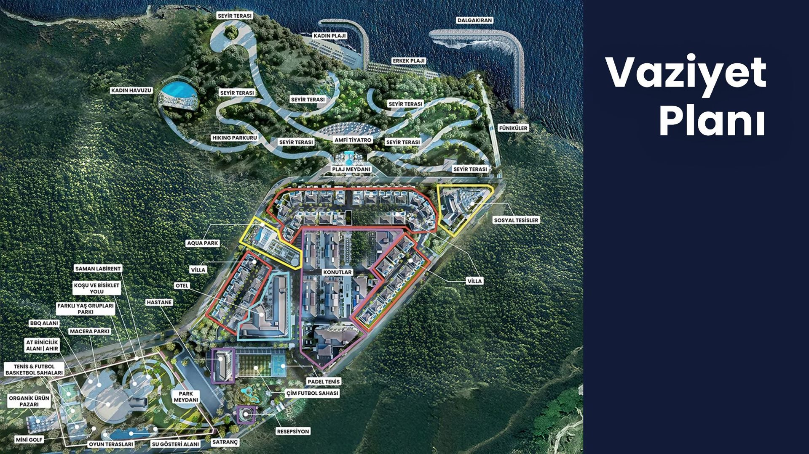
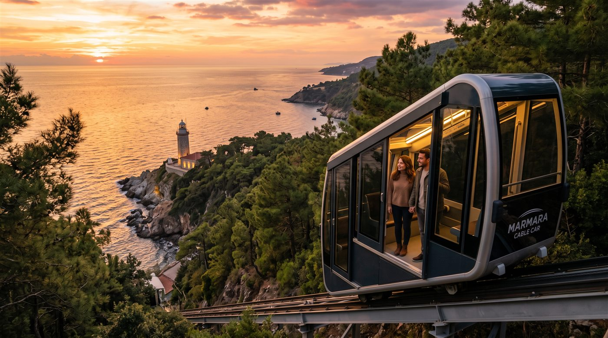
Yarımadanın ucunda tarihî fener ve gün batımı seyir terasları. Tor Ritüeli burada tamamlanır.
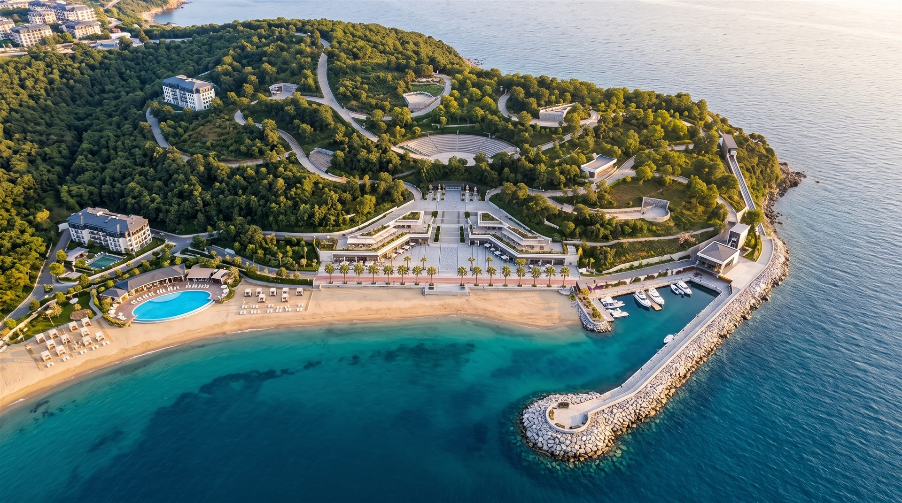
Kadın ve erkek plajları, dalgakıranla korunan sakin koy ve deniz iskelesi.
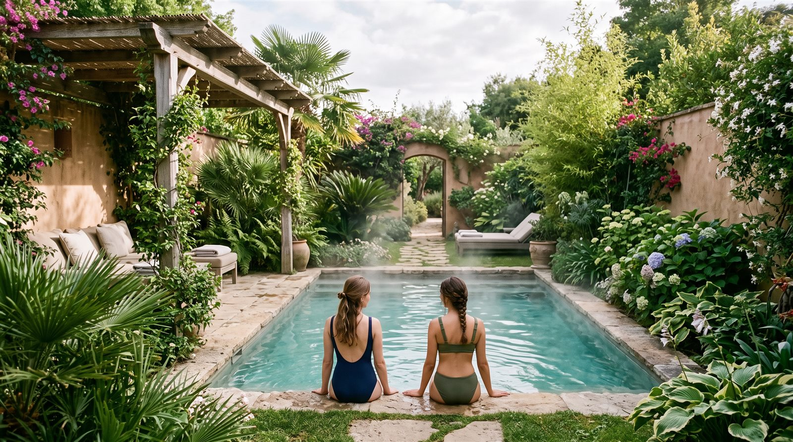
Yarımadanın kuzeyinde yalnızca kadınlara ayrılmış termal havuz ve güneşlenme terasları.
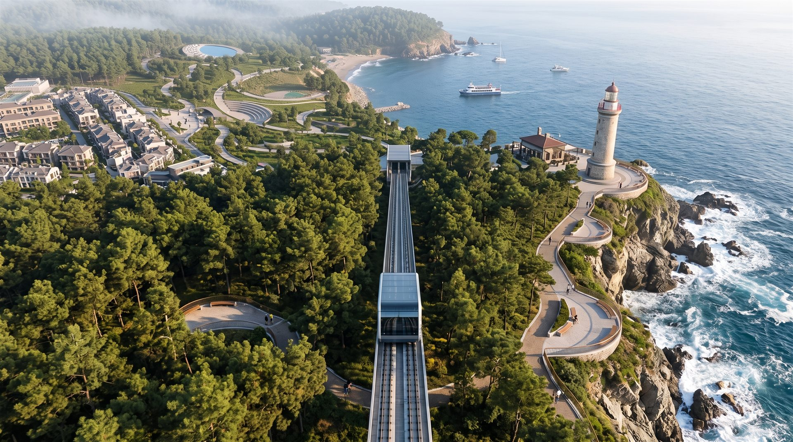
Sahili seyir teraslarına bağlayan füniküler hat; fenere ve orman rotalarına konforlu ulaşım.
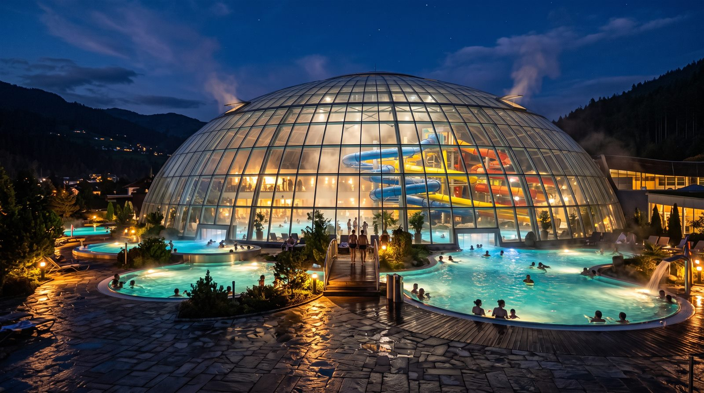
Kaydıraklar, kumsallı yüzme havuzu ve çocuk oyun alanları. Yaz aylarının buluşma noktası.
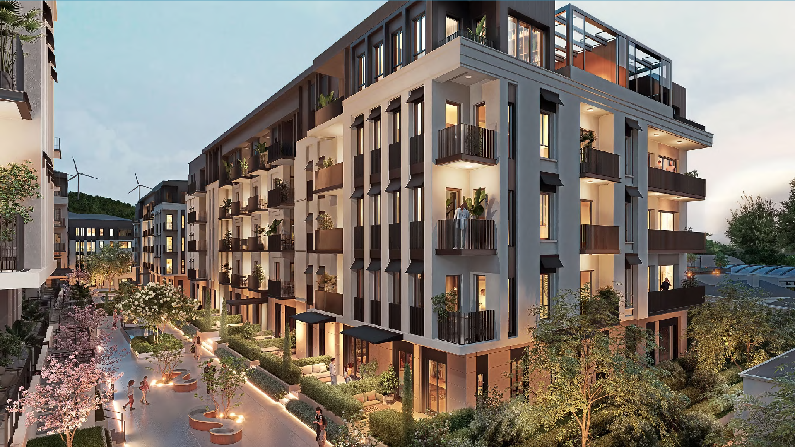
8 blokta 332 konut. 1+1'den 3+1'e tam eşyalı, akıllı ev sistemli daireler.
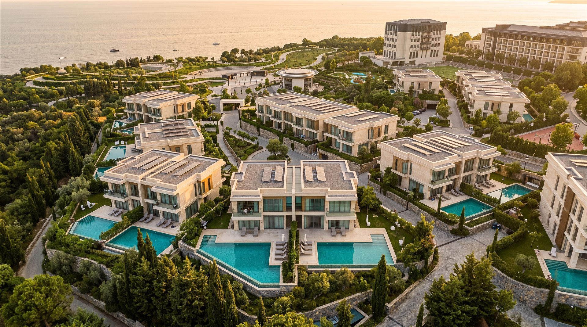
82 villa, 42'si ikiz. 254–310 m² çift katlı, özel bahçeli 3+1 ve 4+1 seçenekler.
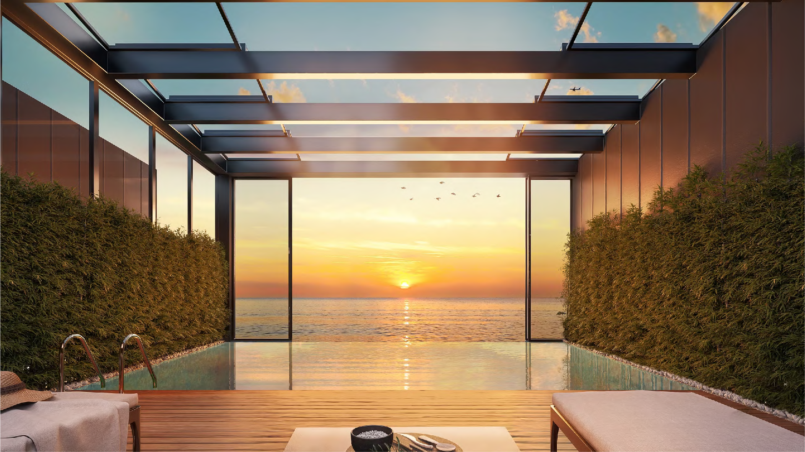
Yerleşkenin kalbinde butik otel konforu: resepsiyon, restoranlar ve deniz manzaralı süitler.
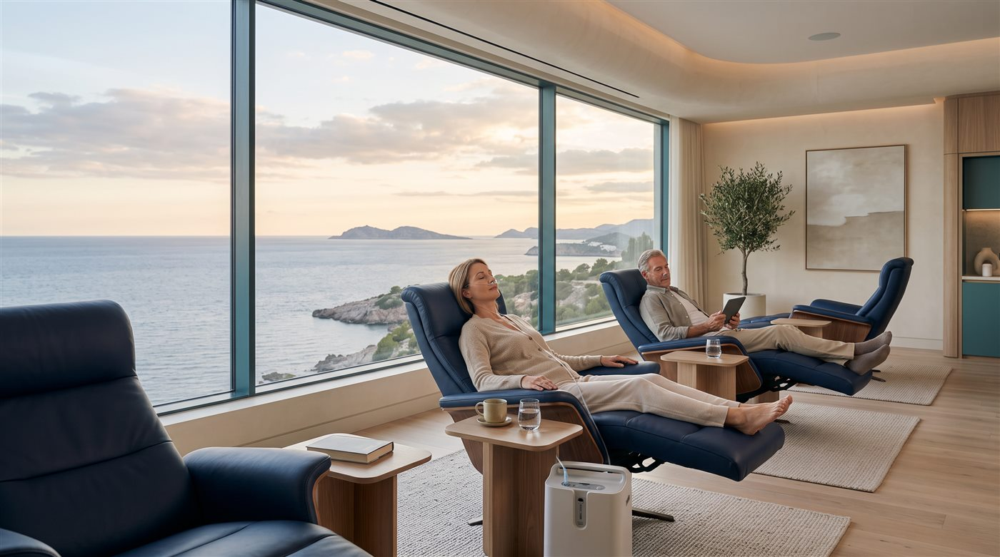
Termal terapiler ve wellness uygulamalarıyla sağlıklı yaşam rutininizi destekleyen merkez.
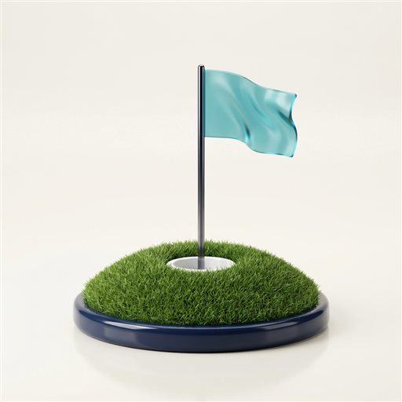
Mini golf, tenis, basketbol, at biniciliği ve organik ürün pazarı; park meydanının çevresinde.
İpucu: Noktalara dokunarak bölge kartlarını açın; dar ekranda planı sağa-sola kaydırabilirsiniz.
Vaziyet planı temsilîdir; mimari tasarım ve peyzaj, proje geliştiricisi tarafından değiştirilebilir.
Yukarıdaki planda gördüğünüz her bölgenin, yapay zekâ destekli fotoreal hava çekimi karşılığı. Dönüşümü video olarak izlemek için ana sayfadaki "Çizimden Hayata" bölümüne göz atın.
Orman, deniz ve yerleşkenin tek karede buluştuğu genel görünüm.
Videosunu Ana Sayfada İzleyinKorunaklı koy, iskele ve kuzey sahilinin kuş bakışı hali.
Videosunu Ana Sayfada İzleyin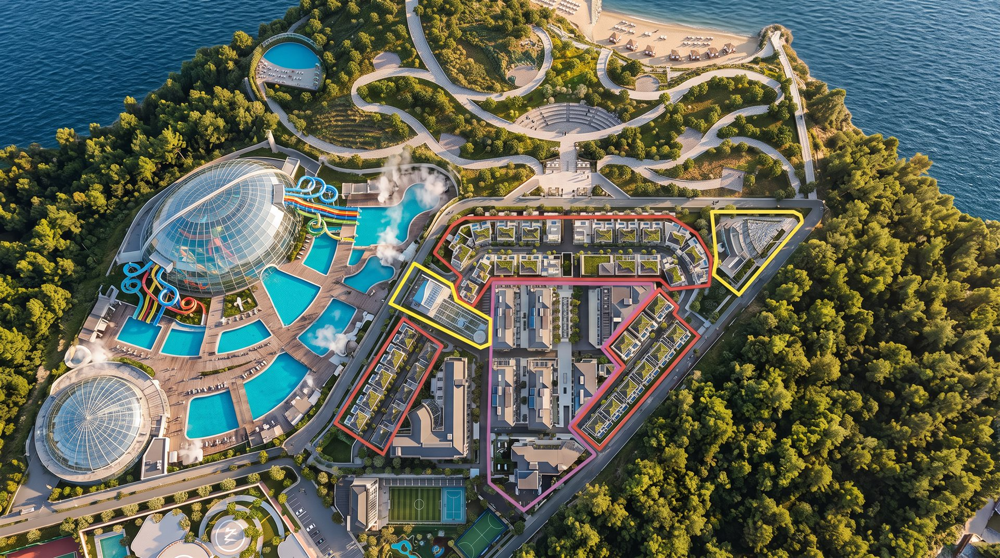
Kaydıraklar, havuzlar ve sosyal tesislerin merkez aksı.
Videosunu Ana Sayfada İzleyinSahilden seyir teraslarına uzanan hat ve tarihi fener.
Videosunu Ana Sayfada İzleyinGörseller yapay zekâ destekli konsept çalışmasıdır; mimari temsil niteliğindedir, bağlayıcı taahhüt içermez.
Her bölge farklı bir ritme göre tasarlandı: konutların sakinliği, sosyal tesislerin hareketi, parkın oyunu ve wellness yarımadasının dinginliği.
Bloklar ve villalar, güney yamacında manzarayı paylaşacak şekilde kademelenir. Tüm daireler tam eşyalı ve akıllı ev sistemli teslim edilir; her ziyaretinizde eviniz sizi hazır karşılar.
Daire ve Villa Tiplerini İnceleyinHelipad'li karşılama binasıyla başlayan merkez aks; resepsiyon, restoranlar, açık hava sineması ve aqua park ile günün her saatine bir seçenek sunar. Akşamları ışıklandırılmış havuz çevresi yerleşkenin buluşma noktasıdır.
Deneyim Günü'nde Yerinde Görün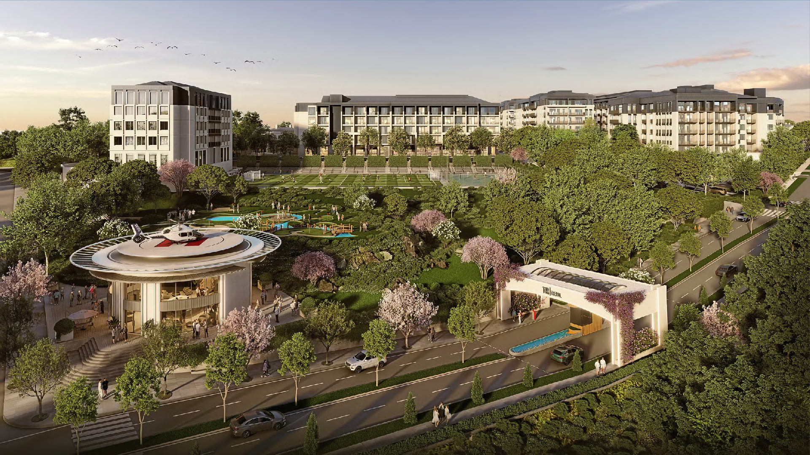
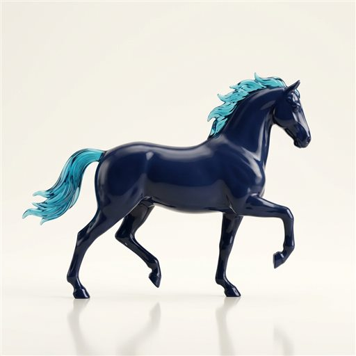
At Biniciliği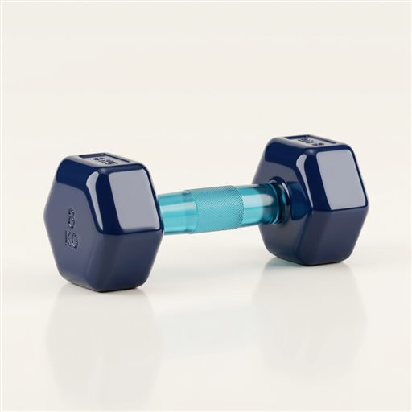
Spor Sahaları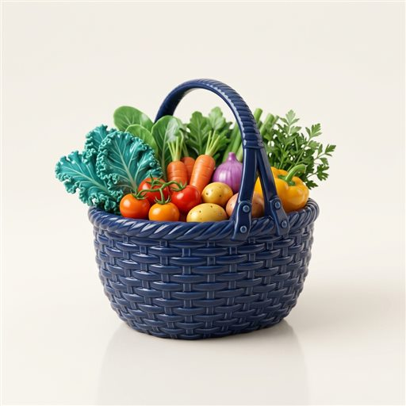
Organik Pazar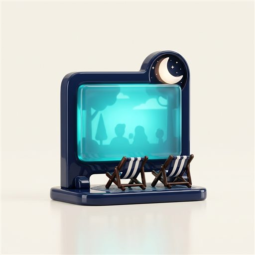
Açık Hava SinemasıGüneybatı ucundaki vadi; tenis, basketbol ve futbol sahaları, mini golf, at binicilik alanı, macera parkuru ve saman labirentiyle her yaşa oyun sunar. Organik ürün pazarı, bölge üreticisini sofranıza taşır.
Aileniz İçin Bir Gün Planlayın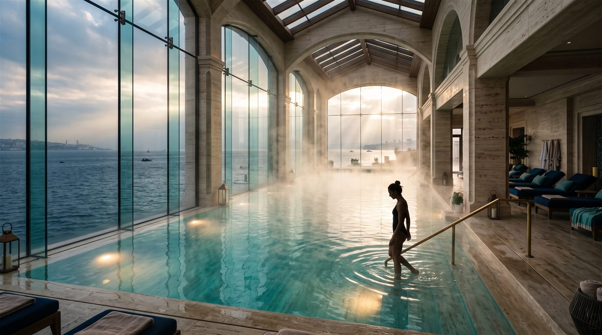
Kadınlar havuzu, hamam ve sağlık merkezi; hiking parkuru, amfi tiyatro ve seyir teraslarıyla çevrilidir. Termal su ve terapiler, sağlıklı yaşam rutininizi destekler; fünikülerle çıkılan fener terası günü taçlandırır.
Termal su içeriğine ilişkin ifadeler tedavi vaadi değildir; sağlık durumunuz için hekiminize danışınız.
Longevity & Wellness ProgramlarıDört bölgeye yayılmış havuzlardan spor sahalarına, restoranlardan atölyelere tüm tesisleri tek sayfada inceleyin.
Tüm Olanakları GörünDeneyim Günü'nde yarımadayı adım adım gezin, termal suyu deneyin. Size uygun daire ve dönemi bulmak için Dönem Bulucu'yu kullanın.